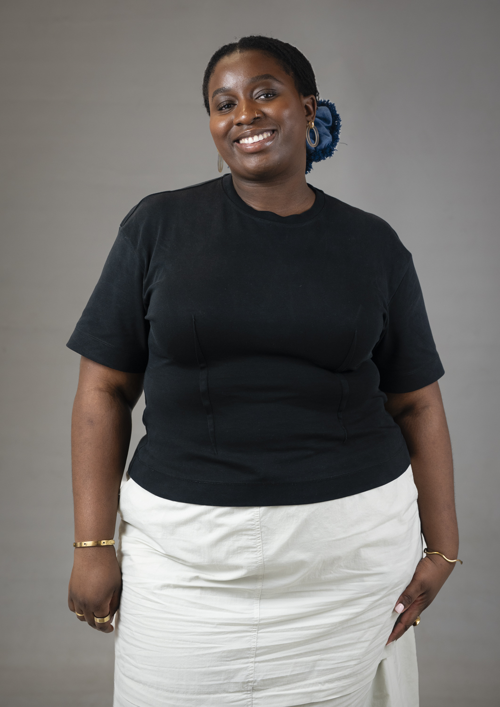

Week by Week
Unit 5: GCD Practices 03 — Overview
Unit 5 runs concurrently with Unit 6 for 15 weeks and culminates in a 2,500-word designed critical report. The unit has three core purposes:
- Writing forms — expand and consolidate descriptive, reflective, and critical writing (building on Units 2 & 3)
- Theoretical framework — develop contextual and theoretical frameworks for the body of work students produce in Unit 6 Platforms
- Practice position — investigate practice in relation to ethical, cultural, critical, and intellectual perspectives on historical and contemporary GCD
The connectivity
Unit 5 and Unit 6 run side-by-side. This allows students to consider their practice in relation to cultural, social, and theoretical contexts of contemporary Graphic Communication Design and discover emerging themes that begin to inform their creative practice.
Workshop philosophy
Your Platform brief isn't just a project to complete — it's a doorway into conversations, ideas, and ways of thinking that can help you understand your own design practice. Platform Leaders have carefully chosen concepts, readings, and approaches that represent important conversations in Graphic Communication Design. By exploring these, you aren't just preparing for Unit 6 — you're discovering new ways to research, think about, and talk about your work.
Workshop sequence at a glance
| Phase 1: Research Methods | Phase 2: Positioning | Phase 3: Critical Practice |
|---|---|---|
| Weeks: 1–5 | Weeks: 6–8 | Weeks: 9–13 |
| Workshops: Expanding Research, Questioning Your Sources, Building Archives, Framing Your Story, Structuring Conversations | Workshops: The Bridge (Part 1 & 2), Midpoint Peer Review | Workshops: Mapping Connections in Space, Publishing Your Practice (Parts 1 & 2), (Week 12 in development), Open Studio |
| LO2 — explore and evaluate a range of historical and contemporary contexts of Graphic Communication Design and investigate how your current practice engages with climate, racial and social justice (AC Knowledge) | LO1 — review, investigate and reflect on the development of your current practice with reference to the body of work you are producing in your Unit 6 Platforms (AC Enquiry) | LO3 — produce a designed critical report that uses descriptive, reflective, and critical writing to contextualise your current practice with reference to debates in the larger context of Graphic Communication Design (AC Realisation) |
Workshop sequence structure
Unit 6 Platform Connection:
- Weeks 1–5 (Platform 1): research training. You use Platform 1 concepts to practice research skills — finding references, annotating, questioning, gathering.
- Week 6 (the bridge): you switch to Platform 2 (different brief, same group). You stop exploring concepts and start analysing your own work.
- Weeks 7–15 (Platform 2): you analyse what your Platform 2 work reveals and develop your critical report.
See the full 13-week programme →
Note: Assessment is holistic and summative, taking place at the end of the unit. You'll receive formative feedback throughout from tutors and peers.
Learning Outcomes
- 🎯 LO1 Review, investigate and reflect on the development of your current practice with reference to the body of work you are producing in your Unit 6 Platforms (AC Enquiry)
- 🎯 LO2 Explore and evaluate a range of historical and contemporary contexts of Graphic Communication Design and investigate how your current practice engages with climate, racial and social justice (AC Knowledge)
- 🎯 LO3 Produce a designed critical report that uses descriptive, reflective, and critical writing to contextualise your current practice with reference to debates in the larger context of Graphic Communication Design (AC Realisation)
Full Programme — 13 Weeks
The complete arc of Unit 5, grouped by stage of the journey. Weeks 1–2 are detailed in full below; later weeks will be added in full nearer the time.
Session Logistics
Room setup
- Two large tables, each seating 15+
- Flexible arrangement — the room can be rearranged based on that week's workshop activities and needs
What to bring
- Bring a laptop — required every session
- Most workshops are analogue: bring paper, Post-its, and pens for marking up references
- Reflective writing tasks are digital — you'll write in MS Word/Teams and hand in online
Session timing
- All sessions start at 10:00 — no exceptions
- Arrive 15 minutes early (9:45) if you can
- The door closes at 10:00 — that's the start of the session
- Record your attendance on Seats
Tutor Groupings




Additional Support
- Academic Support — dates announced on Teams
- Unit 5 Support Tutorials — Monday PM
- Jaap de Maat — Stage 2 Tutorials — Monday PM
Book a Unit 5 support tutorial or Stage 2 tutorial →
Context
Unit 5 runs for 15 weeks. Each workshop is designed for two groups (15+ each) working in one room with two tutors. Most workshops use a shared intro and pre-task discussion, then parallel group work — but the exact structure varies by pedagogical need. Facilitators: see the Facilitator Guide for that week's setup.
Weeks 1–5
Gathering & Experimenting with Critical Practices
You will investigate external Platform 1 concepts and references, developing critical literacy through investigation and experimentation. You'll learn how to research, question, map, and think spatially.
W1: Expanding Research
Gathering & Experimenting — Methods for Research
Wednesday · 10:00–13:00
Your Platform brief isn't just a project to complete — it's in conversation with theorists, practitioners, and ideas that can help you understand your developing design practice. This workshop is where you start building the research skills and critical vocabulary you'll need to write about your practice with precision.
Learning Outcomes for this workshop
- 🎯 LO1Review, investigate and reflect on the development of your current practice with reference to the body of work you are producing in your Unit 6 Platforms (AC Enquiry)
- 🎯 LO2Explore and evaluate a range of historical and contemporary contexts of Graphic Communication Design and investigate how your current practice engages with climate, racial and social justice (AC Knowledge)
Dirk Vis, Research for People Who (Think They) Would Rather Create
- Be a Stranger (p.85): approaching an unfamiliar subject as an outsider can sharpen your thinking, not limit it.
- No Topic is Too Specific (p.29): narrowing your focus to something precise gets you to richer conclusions than tackling a broad topic head-on.
Introduction
Before this workshop, you watched the Powers of Ten video in the Stage 2 lecture. This video shows how perspective shifts when you zoom in and out — from the vast cosmos to a single atom. Research works the same way. You start broad, then zoom in on something specific, then step back to see how it connects to larger ideas.
Video not loading? Watch on YouTube →
Platform Leaders have already chosen concepts, readings, and approaches that represent conversations in Graphic Communication Design. Exploring these now isn't just preparation for Unit 6. It builds the research skills and vocabulary that will let you write a strong, well-informed critical report about your own practice later in the unit.
Today you'll work in two groups with your tutor. You'll read and discuss a reference from your Unit 6 Platform 1 brief collectively. Then you'll map outwards from it — building a constellation that shows what concepts connect to it, what ideas branch from there. The aim is simple: recognise your Platform's references as legitimate, concrete research material, and start building critical literacy.
Schedule
Arrive & settle
Shared intro + frame (both tutors, all students)
Your tutors introduce the week's purpose: building research skills for your critical report.
Shared pre-task discussion (both tutors, all students)
Quick group discussion of the Dirk Vis reading — what struck you, what's unclear. Allows time for all students to enter.
— Split into groups: each tutor with their 15+ —
Start engaging with the reference (each group)
Your tutor introduces the reference from your Platform 1 brief and guides an initial discussion. This is a conversation to help you start thinking about it.
Close reading (each group)
Re-read the reference passage. Annotate key phrases. Identify one claim that surprises you. Note one connection to your own thinking. Your tutor circulates and listens.
Build the constellation (each group, flexible 30–45 min)
Map outwards from the reference: what concepts connect to it? What ideas branch from there? Use paper, Post-its, pen — whatever feels natural. Let the act of placing things near each other reveal what belongs together. Take a brief break if the group needs one. Your tutor will help manage the timing.
Cross-group viewing + writing + exit recap
Cross-group viewing (10 min): brief walk-around. Your group shows your map. What patterns do you notice across the two groups' maps? Where did groups connect ideas differently?
✍️ Written reflection (15 min): write a 250-word reflection. Your reflection is written during the session when ideas are fresh. It's scaffolding for your final critical report. The thinking you do here forms the foundation for what you'll write later in the unit.
If you're stuck, try: the concept you chose from the map and why it pulled you in / something that came up in conversation with someone else / how today's reference connects to something you already knew.
- What concept from today's mapping connects most directly to how you think about design? Why does it matter? LO1 + LO2
- How does one of today's ideas challenge or confirm something you already believed about design? LO1
- What surprised you about how your group approached the mapping differently than you expected?
Exit recap (15 min): share one sentence from your writing. Your tutors weave together what you've done, why, and how it connects to your developing practice and Unit 6 work (LO1 + LO2).
Hand in + overflow
Photograph your constellation. Finish writing, hand in digitally. Overflow time for students who need it.
Materials: paper, pens, Post-it notes, markers, table space.
Week 2 · Questioning Your Sources — following Irene Albino's Critical Margins lecture: interrogating what texts claim, how they argue, and what they mean for your practice.
Understanding the connection: Unit 5 ↔ Unit 6
Why Unit 5 research now, when Platform work happens in Unit 6?
Exploring Platform 1 references in Weeks 1–5 builds the research literacy you need. In Week 6, you'll switch to Platform 2 and start analysing your own developing practice within that brief. Unit 5 is rehearsal. By Week 6, you're ready to analyse your own work with the same critical attention.
FAQ
What if my Platform starting point doesn't seem relevant to my practice?
That's actually useful information. Exploring why something doesn't connect to your work helps you define what your practice is. Write about the gap. That's valid critical reflection.
Can I research multiple concepts from my brief?
Better to go deep on one concept than shallow on many. Master researching one idea thoroughly. You can apply those skills to other concepts later.
What if I'm interested in concepts from other Platforms?
You can look at other Platform 1 briefs for inspiration during Weeks 1–5, but your primary research lens should be your own Platform 1. This keeps your research focused. In Week 6, you'll switch to Platform 2 anyway — likely a different Platform from your Platform 1 — so you'll get exposure to multiple Platform perspectives across the unit.
Research isn't about finding the right answer. It's about developing your own perspective through curiosity, exploration, and making connections others haven't seen yet.
W2: Questioning Your Sources
Gathering & Experimenting — Critical Engagement with References
Wednesday · 10:00–13:00
This week you'll interrogate Daniel van der Velden's Research and Destroy with hard questions. What's being claimed? Who benefits? What can you use? What do you resist?
Good Copy Bad Copy showed you annotation happening in the world — as reframing, protest, reclamation. Yesterday Irene showed you how artists make annotation a critical and artistic practice. Now you're doing it with your sources. Annotation is one of your tools for critical writing. It's how you interrogate sources rather than receive them passively — how you position your own work in relation to historical and contemporary design practices.
Learning Outcomes for this workshop
- 🎯 LO1Review and critically reflect on the development of your current practice by actively interrogating sources that inform your Unit 6 Platforms (AC Enquiry)
- 🎯 LO2Explore and evaluate a range of historical and contemporary contexts of Graphic Communication Design and investigate how your current practice engages with climate, racial and social justice (AC Knowledge)
- Watch Good Copy Bad Copy (pre-lecture task) — embedded below.
Video not loading? Watch on YouTube →
- Attend Irene Albino's Critical Margins lecture (Tuesday), on annotation as artistic and critical practice. [Slides: Stage 2 Lecture Padlet]
- Read Dirk Vis, Research for People Who (Think They) Would Rather Create — specifically Questions to Help You Get Started (Appendix). Read the PDF →
Schedule
Arrive & settle
Shared intro + frame (both tutors, all students)
Your tutors introduce the week: interrogating texts is how you build critical thinking.
Shared pre-task discussion (both tutors, all students)
Quick discussion of the Dirk Vis reading — what questions stood out to you?
— Split into groups: each tutor with their 15+ —
Start engaging with the text (each group)
Your tutor introduces the text and the four questions framework. This is a brief conversation to help you start thinking about the material.
- 💭 Q1 — What does the text claim? Direct statements, main arguments, explicit ideas. Circle key claims, underline main arguments, mark however feels natural.
- 💭 Q2 — How does the argument work? How the author builds their case. Evidence, connections, logic. Draw arrows between ideas, highlight evidence.
- 💭 Q3 — What does this mean for your practice? Where your thinking aligns or resists the author's ideas. Write reactions in margins, use ✓ and ✗.
- 💭 Q4 — What questions remain unanswered? Gaps, absences, what extends beyond the text. Write questions in margins.
A note: Dirk Vis asks — what are the key questions this source raises? Trust your instincts as you read.
Question 1: What does the text claim? (each group)
Solo work: re-read and annotate for direct statements, main arguments, explicit ideas (15 min). Group discussion: what did you find? (5 min)
Question 2: How does the argument work? (each group)
Solo work: trace how evidence supports claims, where logic connects, assumptions (15 min). Group discussion: what did you find? (5 min)
Break (flexible within each group)
Question 3: What does this mean for your practice? (each group)
Solo work: explore where your thinking aligns or resists the author's ideas (15 min). Group discussion: what did you find? (5 min)
Question 4: What questions remain unanswered? (each group)
Solo work: identify gaps, what extends beyond the text, what you'd investigate further (15 min). Group discussion: what did you find? (5 min)
Written reflection
✍️ Written reflection (30 min): write a 250-word reflection. Your reflection is written during the session when ideas are fresh. It's scaffolding for your final critical report. The thinking you do here forms the foundation for what you'll write later in the unit.
- Which of the four questions revealed something you hadn't noticed about the text before? What did it show you? LO1 + LO2
- Where do you stand in relation to the author's ideas? Which claims do you agree with, resist, or question? LO1
- How might you use this text's arguments or approach in thinking about your own Unit 6 practice? LO1
- What annotation approach or marking strategy from your group or the other group might you borrow for future reading?
Exit recap (10 min): share one sentence from your writing. Your tutors weave together what interrogating a text means and why this matters for your critical report (LO1 + LO2).
Hand in
Finish writing, hand in digitally.
Materials: printed copy of the text + pen/markers of your choice.
Week 3 · Building Archives — following Laura Knight's workshop and introduction to Community resource list.
W3: Building Archives
Building and Keeping the Story
Wednesday · 10:00–13:00
Your current practice leaves traces: the objects, images and materials you gather and hold on to say something about who you are as a designer. This workshop is where you start treating those traces as an archive, a curated collection that tells a story, and begin building the research skills and critical vocabulary you'll need to write about your practice with precision.
Learning Outcomes for this workshop
- 🎯 LO1Review, investigate and reflect on the development of your current practice with reference to the body of work you are producing in your Unit 6 Platforms (AC Enquiry)
- 🎯 LO2Explore and evaluate a range of historical and contemporary contexts of Graphic Communication Design and investigate how your current practice engages with climate, racial and social justice (AC Knowledge)
Read and engage with: Publishing as Practice as Resistance, by Soulellis.
Introduction
In 741.6092, Laura Knight's lecture/workshop, we saw how a collection is never neutral: what is gathered, kept and ordered gives a specific shape to the story it tells.
We can use that thinking to look at ourselves, treating the things we choose to gather and keep as archives that reveal our identity. And the same applies to our Community Reading List, another collection we're building together. In these first weeks for Unit 5, we are generating, documenting and keeping outcomes from each of our workshops.
Today we'll explore how archives work and begin to consider our own current practice as graphic communicators through the lens of collected objects.
Schedule
Arrive & settle
Introduction (both tutors, all students)
Your tutors introduce the week's purpose and explain how archives function as curated collections that reveal narratives, and introduce the pre-task text followed by a group discussion.
Activity 1: Narrative Objects (each student, in your groups)
Explore the "Below the Surface" online archive and see how a handful of objects can imply a whole person. Collect four objects that intrigue you, arrange them, and tell the story of their owner. Notice how reordering the objects changes the narrative.
In smaller sub-groups: present your displays and stories to each other. How did you decide on the order? What assumptions did you make about the person? How might different arrangements create different narratives?
Activity 2: Collective Identity Archive (each group)
Build a personal archive representing your identity, gathering from online sources or your personal archive (phone, website if you have one) images of objects that embody different aspects of who you are as a designer. All images become a shared collective archive, visible to everyone.
Rebuild your own collection from the whole group's images, keeping only one from your own initial selection. Arrange them in a deliberate order and add brief labels explaining what each represents about your identity as a designer.
In pairs, explain your collection to each other, then discuss alternative interpretations. Which objects would you keep or leave out, which would you swap or add, and why? What new meanings emerge when you look at your own objects through your partner's lens?
This activity should contain an organic break — take a 15-minute break whenever suits your group, but complete all three tasks.
Writing task and closing
Write 200–250 words responding to these prompts (50+ words per prompt):
- Archives and curation: how did selecting and arranging objects reveal aspects of identity? What did you learn from Activity 1 about how archives tell stories?
- Your current practice as a graphic communicator: what does your final collection reveal about your current practice as a communication design student? Why did you choose those objects, and what does the arrangement communicate?
- Reinterpretation: how did the reinterpretation exercise change your understanding of how objects carry meaning?
- Connection to your practice: how does creating and keeping an archive apply to your current practice and Unit 6 work, and to how you document and present your own design process?
Closing: your tutors facilitate a brief reflection — what insights emerged from working with archives today? How might thinking about your work as an archive influence how you document and present your practice? How does understanding identity as something constructed through curation open new possibilities for how you think about yourself as a designer?
Overflow
Week 4 · Framing Your Story
W4: Framing Your Story
Telling the Story
Wednesday · 10:00–13:00
Once you have gathered and kept your story as an archive, the next move is to tell it. This workshop is where you turn to your relationship with community and learn to build a visual narrative about it, developing the sequencing skills and critical vocabulary you'll need to write about your practice with precision.
Learning Outcomes for this workshop
- 🎯 LO1Review, investigate and reflect on the development of your current practice with reference to the body of work you are producing in your Unit 6 Platforms (AC Enquiry)
- 🎯 LO2Explore and evaluate a range of historical and contemporary contexts of Graphic Communication Design and investigate how your current practice engages with climate, racial and social justice (AC Knowledge)
Introduction
Community can mean many things in the context of your design work: a community of images, a community of practice, a community you belong to, a community you're representing, or a community you're creating work with or for.
In these weeks for Unit 5, we are generating, documenting and keeping outcomes from each of our workshops. Today we'll explore how communities connect to our current practice, and use visual sequencing to tell a story about a community that relates to our Unit 6 work.
The aim is simple: recognise visual sequencing as research material, and keep building the critical literacy that will let us write a strong, well-informed critical report about our own practice later in the unit.
Schedule
Arrive & settle
Introduction (both tutors, all students)
Your tutors introduce the week's purpose and explain how communities can shape communication design practice.
Activity 1: From Single Images to Sequential Narrative (each student, in your groups)
Your tutors introduce four shot types drawn from film and photography, and how they build meaning when viewed in sequence, moving from context to detail to focus to significance.
- Establishing shot — sets the context. Where is your community?
- Mid-shot — shows details. What are the fundamental characteristics of this community?
- Close-up — directs our focus. What are you communicating, and to whom?
- Extreme close-up — amplifies significance. What is your position in relation to this community?
Gather visual material representing a community connected to one of the references or ideas that you're exploring in your Unit 6 work, keeping the four shot types in mind. Gather more than you need so you have options.
Relationship to weekly lecture: you may also want to activate some of the ideas you were exposed to during Mike's lecture yesterday, about image matters, why image matters, and the ethnography of the self.
Select four images and arrange them in sequence according to the shot composition framework. Add brief notes under each explaining what the shot shows, why you selected it for that role, and how it connects to the reference or ideas you're exploring in Unit 6. Consider how moving through the sequence tells a story about the community and reveals your relationship to it.
Part 3 should include an organic break — take a 15-minute break whenever suits you, but complete the sequencing.
Activity 2: Reflecting on Your Sequence (each group)
Discussion 1 — Small group discussion: in small groups, walk each other through your sequences. Why did you choose these specific images for each shot? How does moving from establishing shot to extreme close-up tell a story about the community?
Discussion 2 — Partner discussion: in pairs, discuss how choosing a sequence for your story formalised or changed how you think about community. What did sequencing reveal about your relationship to this community that a single image would not?
Writing task and closing
Write 200–250 words responding to these prompts (50+ words per prompt):
- Visual narrative and community: how did the shot composition framework help you think about community? What story does your sequence tell, and how does it reveal your relationship to this community?
- Your position as a designer: what does your extreme close-up reveal about your position and the context in which you work? How do you see your relationship with the reference you're exploring? Where is your focus?
- Sequencing and meaning: how did deliberate sequencing change the meaning of your images? What does this tell you about how stories are constructed through sequencing?
- Connection to your current practice: how might visual sequencing become part of your ongoing Unit 6 research and development process, and how you document and present your own design process?
Closing: your tutors facilitate a brief reflection — what insights emerged from working with communities today? How did the structured approach to visual sequencing change how you thought about representing community? How does understanding your relationship to communities influence how you think about your role as a designer?
Overflow
Week 5 · Structuring Conversations
W5: Structuring Conversations
Investigating the Story
Wednesday · 10:00–13:00
Our current practice will become clearer when someone else helps us draw it out, and even clearer when we learn to ask precise questions about how it is read. This workshop treats conversation as research: working in pairs, we will interview each other about our current practice, the contexts of graphic communication design our Unit 6 work sits within, and whether it opens onto the environmental crisis, racial justice or broader social issues shaping the field, each of us helping the other put their work into words. From there we build a set of feedback questions for our own work — the questions we can use at Open Studio (for example) to elicit from our peers what our work communicates to them.
Learning Outcomes for this workshop
- 🎯 LO1Review, investigate and reflect on the development of your current practice with reference to the body of work you are producing in your Unit 6 Platforms (AC Enquiry)
- 🎯 LO2Explore and evaluate a range of historical and contemporary contexts of Graphic Communication Design and investigate how your current practice engages with climate, racial and social justice (AC Knowledge)
Pre-task details TBC.
Introduction
A good question helps someone say what they already half-know but have not yet put into words. As an interviewer, your job today is not to satisfy your own curiosity but to help your partner articulate their work, especially the parts they find hard to pin down or are unsure how others read.
Over the past few weeks you have explored research methods, discussed the idea of current practice, and examined the communities your work may connect to. Today you enter into conversation with that material and see what a partner's questions can draw out of it.
This is also Open Studio week for Unit 6. By the end of the session, you will have turned your conversations into a set of feedback questions for your own work: precise prompts you can use to ask others what it communicates, either in surveys or in one-on-one conversations. We recognise questioning and listening as legitimate research, and will keep exploring prompts to write a strong, well-informed critical report about your current practice later in the unit.
Schedule
Arrive & settle
Introduction (both tutors, all students)
Your tutors introduce the week's purpose and explain how interview, questioning and listening work as research methods for investigating practice. This is Open Studio week for Unit 6, so today's work builds toward a set of feedback questions each student can use to ask others about their own work.
— Split into groups: each tutor with their 15+ —
Activity 1: Preparing to Interview (each student, in your groups)
Before you interview anyone, get familiar with the kinds of questions that draw a considered answer out of someone. Your tutor introduces three types:
- Closed questions to establish facts (e.g. "Do you have visual research you're already working from, or are you starting from reading?")
- Open questions to encourage exploration (e.g. "How has your current practice developed through your Unit 6 work so far?")
- Probing questions to go deeper (e.g. "What does your focus reveal about your design position on the environmental, racial or social questions shaping the field?")
Draft a handful of questions of each type. Remember that your aim as interviewer is to help your partner articulate their own work, so think about which questions will open them up rather than simply what you are curious about.
Activity 2: Interviews in Pairs (each group)
Working in pairs, interview each other about your current practice. Take it in turns so you are both interviewer and interviewee; each interview should last around 20 minutes.
This activity should contain an organic break — take a 15-minute break whenever suits you best. The natural point is at the end of both interviews, but depending on how things go, it may also happen between the two.
As an interviewer, your job is to help your partner put their work into words. Do your best to draw them out, especially on the things they find hard to articulate or are not sure how they may come across. Follow what they say rather than steering them toward what you happen to be curious about.
- Use a mix of closed, open and probing questions
- Listen closely and follow up on what your partner says
- Notice where they hesitate or seem unsure how their work comes across — those are the places where it may be worth going deeper
- Refer to your work and materials to help articulate your thoughts
- Think aloud and let insights emerge through the conversation
- Pay attention to anything you realise you are unsure about — what your work communicates or should communicate, and to what degree that comes across as clear. Jot these down; you will use them shortly.
- Can you walk me through what you are making, and how it has taken shape so far?
- Right now, are you thinking more about what you want to say, or how you want to say it?
- Who is your work for, and who makes up the community/audience/user it connects to?
- What do you want them to take from this work?
- If someone saw this at Open Studio, what would you hope they noticed first?
- What would you most like to find out from the people who see it?
Activity 3: Writing Feedback Questions for Your Work (individually, then in pairs)
If you're thinking about leaving a request for feedback beside your work during Open Studio inviting others to respond, you could use what surfaced in your interview to write a set of feedback questions about your own work — questions that ask others what your work communicates. For example:
- What do you think my work communicates about the usability of this product?
- What does my work say about the community it represents?
- What is the first thing you notice, and what does it tell you?
Then test your questions with a different partner:
- Show them your work and your draft questions
- Ask whether each question is clear and whether it would get you an answer worth having
- Refine, cut or add questions based on their response
Writing task and closing
Write up two things:
- The insights you received: a short paragraph (around 150 words) on what your partner's questions helped you articulate about your current practice, and what you noticed about how your work comes across, including whether the conversation opened onto the contexts of graphic communication design your work sits within, and/or the environmental crisis, racial justice or broader social issues shaping the field. You may want to write down the exact questions if they were particularly useful.
- Your feedback questions for Open Studio: the refined set of questions you will leave beside your work to ask others what it communicates. These can be used at Open Studio but composing them is a very good exercise you can draw on every time you need to ask for specific feedback about your work — and that will happen a lot once you are in Stage 3. Writing precise questions about what your work communicates is itself a way of investigating your own practice, and it will help you work out what you already know about your work and its context, and what you still want to find out.
Closing: your tutors lead a brief reflection — what did you discover about your own work by being questioned? How does asking a precise question change the kind of feedback you get? How might questioning and listening become part of your ongoing Unit 6 research?
Overflow
Week 6 · The Bridge — Part 1
Weeks 6–8
The Bridge — Reflecting and Repositioning
You will reflect on what you've learned through Phase 1 and begin positioning your own current practice within those frameworks. Peer feedback and midpoint review create a deliberate shift from external investigation to internal analysis: what will you carry forward?
W6: The Bridge — Part 1
Phase 2: Positioning — The Bridge
Wednesday · 10:00–13:00
Video not loading? Watch on YouTube →
Learning Outcomes for this workshop
This week emphasises LO1 (reviewing and reflecting on your practice). You'll work with the investigative practices from Weeks 1–5, now applied to structuring and refining your own argument.
- 🎯 LO1Review, investigate and reflect on the development of your current practice (AC Enquiry)
- 🎯 LO2Explore and evaluate contexts, now applied to your own writing and thinking (AC Knowledge, applied)
Read Dirk Vis, Research for People Who (Think They) Would Rather Create:
- Reflection: Synopsis (p.34) — "seen together" — distilling your five pieces into a coherent whole
- Reflection: Abstract (p.36) — what form will your reflection take?
- Reflection: Attitudes (p.38) — the mindset you need for this work
Gather your five 250-word reflections (Weeks 1–5) in one document. Ideally collected in a single document where you can see them all at once.
Bring a laptop. You'll need it for this session. If you don't have one, laptops are available to loan from CSM Library.
Bring evidence of your Project 1 work. This might be photos, sketches, drafts, prototypes, final pieces, or anything that represents what you made.
Introduction
Phase 2: Positioning begins with a deliberate shift. You've spent five weeks investigating. Now you take what you've learned and use it to examine your own work. These three weeks are about reflecting on your practice, positioning it within the contexts you've explored, and preparing the evidence for your critical report.
If you engaged with the five workshops and wrote at the end of each, you already have around 1,250 words: half of your 2,500-word critical report. These three weeks are not about starting again or adding more. They are about taking what you have written and working it so that it holds together and reads well.
The investigative practices you've been using — questioning, organising, sequencing — now become tools for structuring and refining your own writing. You already know how to do this work. Today you apply it to your own argument.
These practices help you see the whole territory of your argument at once. They help you decide what to keep, what to foreground, what to let go. They help you move a reader through your thinking.
Different approaches suit different thinkers. You will find what works for your own thinking and use it.
Today we focus on making your writing cohere and read well. By the end of today you should have a spine: your five pieces reordered into a single through-line, joined up, with the thinnest parts strengthened.
Schedule
Arrive & settle
Shared introduction (both tutors, all students)
Introduce the Bridge and the idea of writing from the centre: you already hold half your report. Explain that the frameworks now become writing methods. Set today's aim: find the spine.
Activity 1: Map Your Writing (working with what you have)
What you do:
- Lay out all five pieces where you can see them at once: on paper, as cards, as printouts spread on a desk, or in one scrolling document. Read them as a whole rather than as five separate tasks.
- Now map them. Visualise the territory of your report so far in whatever way helps you see it clearly. This might mean laying ideas out spatially, drawing connections, marking which ideas cluster together, or simply writing notes about how the pieces relate. Choose the method that makes sense to you.
- As you map, mark: the through-line (what is the thread that runs across the five pieces?); the strongest passage (where is your writing already doing real work?); the thinnest passage (where is there least on the page?); overlaps and repetitions (where do two pieces say the same thing?).
In small sub-groups (last 10 minutes): show someone your map and say, in one sentence, what your report is about. If you cannot yet say it in a sentence, that is useful to know.
Activity 2: Curate and Connect (working with what you have, and writing new joins)
Within this 45-minute window, you'll move through three tasks. You can take a short break (10–15 minutes) whenever it suits you best, but complete all three tasks.
Treat your five pieces as an archive. Decide the order that best tells the argument of your report, not necessarily the order you wrote them in. Select what to foreground, and be ruthless about what you need to cut. Curation is a way of revealing a narrative.
Your five pieces were written separately, so they will not yet read as one continuous argument. Write the joins: the sentences that take a reader from one section into the next. Then take your thinnest passage (the one you decided to keep) and draft 50–100 new words to give it substance. This is new writing you produce today, and it comes from developing ideas you already have, not from new research.
Swap your reordered, joined-up spine with a partner. Can they follow the through-line from start to finish? Mark, on each other's work, the exact point where the thread is lost or a join feels abrupt. This is low-stakes practice for the peer-assessment session in Week 8.
Break
Writing task (practical)
Bring your reordered pieces and your new connective writing together into one continuous document. This is your working spine and the basis for next week.
Closing (tutor-facilitated discussion)
What did seeing your writing as a whole reveal? Where is your spine strongest? What does your report still need going into next week?
Exit + framing for Week 7
Next week: you'll focus on how your spine reads — pacing, clarity, voice. Bring your continuous draft.
After the workshop
Before you leave: save your continuous draft spine document — this is your starting point for Week 7.
Between now and Week 7: let your reordered, joined-up draft settle. Your next work is in Week 7.
W7: The Bridge — Part 2
Phase 2: Positioning — The Bridge
Wednesday · 10:00–13:00
Learning Outcomes for this workshop
This week continues LO1 (reflecting on your practice). You're now focusing on how your argument reads — the opening, pacing, voice, and how ideas develop.
- 🎯 LO1Review, investigate and reflect on the development of your current practice (AC Enquiry)
- 🎯 LO2Apply critical thinking to structure, pacing, and clarity of your own writing (AC Knowledge, applied)
Read Dirk Vis, Research for People Who (Think They) Would Rather Create:
- Findings: Non-Knowing (p.88) — "Any research document is a kind of map."
- Findings: Foreignness (p.84) — "Be a stranger to your own work."
- Findings: Forms of Knowing (p.86) — what counts as knowledge in your writing?
Bring your continuous draft (the spine you produced last week). Read through it once or twice before the session. Notice where it flows and where it stumbles.
Bring a laptop. You'll be reading and refining during this session.
Bring evidence of your Project 1 work and any early work from your developing practice. You may reference this as you expand your key ideas.
Introduction
Last week you found your spine: your five pieces reordered into a single through-line and joined up. Today we make it read.
A critical report is still a piece of writing that a reader moves through. Today we focus on: opening, pacing, voice, ending. Where does your report begin, and does the opening earn a reader's attention? Where does the writing rush past an idea that deserves more room? Where is a sentence trying to do too much, or simply vague?
You are not adding new content. You are expanding the ideas that matter most and sharpening your language. By the end of today you should have a near-complete draft ready for peer feedback in Week 8.
Schedule
Arrive & settle
Recap and introduction (both tutors, all students)
Recap the spine from last week. Today we focus on: opening, pacing, voice, ending. Set today's aim: make the draft read, and give the important parts room to be refined.
Activity 1: Read as a Reader (working with what you have)
What you do: read your draft aloud, quietly to yourself or with a partner reading it back to you. Hearing it is the fastest way to notice where the writing stumbles.
As you read, work on:
- The opening. How does your report begin? Rewrite your first few sentences so they bring a reader in rather than clearing your throat. Ask each other: what do you need to hear here for the text to make more sense?
- One overloaded sentence. Find a sentence carrying too much and give it room: break it, slow it down, let the idea breathe.
- One vague sentence. Find a sentence that gestures at a point without making it, and rewrite it to say exactly what you mean. Cut the qualifiers that add nothing.
Activity 2: Give It Room to Shine (writing new, and precision editing)
Within this 75-minute window, you'll move through three tasks. You can take a short break (10–15 minutes) whenever it suits you best, but complete all three tasks.
Identify the single idea most central to your practice, the one your report most needs to land. Give it breathing space: write new material that develops it, evidences it and follows it through. This is new writing you produce today, and it comes from deepening an idea you already have. Connect this to your Project 1 work and your developing practice where relevant.
Take one short section and edit it for precision. Cut vague qualifiers, replace general claims with specific ones, make sure your sources are in place, and that each idea is tied to your actual work rather than to design in general.
Read each other's opening and expanded key idea. Tell each other, specifically: what you got from the reading, where you wanted more room, and where you wanted more precision. Note what you will ask your peers to help you with in Week 8.
Writing task and closing
Writing task (practical): bring your rewritten opening, your expanded key idea and your precision edits into your draft, so you leave with a near-complete report.
Closing (tutor-facilitated discussion): what changed when you read your writing as something a reader moves through? What will you bring to next week's peer-assessment session, and what will you ask your peers to help you with?
Exit + framing for Week 8
You now have a near-complete draft. Peer feedback in Week 8 will help you refine further and identify what to cut when you synthesise down to 600 words for your final critical report.
After the workshop
Before you leave: save your near-complete draft — you'll bring it to Week 8 for peer feedback.
Between now and Week 8: your draft is complete. Bring it to Week 8 for peer feedback. You'll get input next week and refine from there.
Week 6 vs Week 7
| Week 6 | Week 7 |
|---|---|
| Core work: Map + Curate + Connect | Core work: Read + Expand + Refine |
| Focus: seeing your whole argument, deciding what matters | Focus: making your argument read, giving ideas room to develop |
| New writing: 50–100 words (joins + strengthen thin passage) | New writing: ~200+ words (expand central idea) |
| Peer work: partner map check + join feedback | Peer work: partner opening + key idea exchange |
| Output: continuous spine draft | Output: near-complete draft ready for peer review |
W8: Midpoint Peer Review
Introduction
Your midpoint hand-in is a checkpoint. It's not a final assessment — it's a moment to pause, reflect on what you've learned so far in Unit 5 and Unit 6, and get feedback on your thinking.
This week, your peers will read your work and give you feedback. But they won't be giving opinions. They'll be giving feedback based on the same Learning Outcomes your tutors use — the criteria that structure what Unit 5 is asking you to do.
This is powerful because it makes assessment transparent. You get to see: what does evidence of this Learning Outcome actually look like? You get to see it in your peers' work, and your peers will see it in yours.
Your role today is twofold. First, you'll be a reviewer, reading two of your peers' hand-ins and giving them feedback linked to the LOs. Second, you'll be reviewed by two of your peers. Both are learning experiences. Giving good feedback teaches you how to assess work. Receiving peer feedback gives you concrete next steps for your own thinking.
Your peers' feedback is your starting point for moving forward. Use their action points and your own reflections to develop your work over the following weeks.
Learning Outcomes for this workshop
- 🎯 LO1Review, investigate and reflect on the development of your practice with reference to the body of work you are producing in your Unit 6 Platforms (AC Enquiry)
- 🎯 LO2Explore and evaluate a range of historical and contemporary contexts of Graphic Communication Design and investigate how your current practice engages with climate, racial and social justice (AC Knowledge)
- 🎯 LO3Produce a designed critical report that uses descriptive, reflective, and critical writing to contextualise your practice with reference to debates in the larger context of Graphic Communication Design (AC Realisation)
Your midpoint hand-in & peer review. You will have handed in your 600-word midpoint reflection by 1:00pm on Monday. This week, your peers will read your work and give you feedback using Learning Outcomes and Assessment Criteria to assess Unit 5.
- Review your own 600-word hand-in. What did you focus on? What were you trying to show?
- Read the "Guidelines on Writing Peer Feedback" document (your tutor will provide this). Notice the principles: positive tone, work-focused, feed-forward language.
- Familiarise yourself with the three Learning Outcomes above — you'll be using these to give feedback to others.
Why this matters: understanding the LOs through peer review is powerful. When you assess your peers' work against these criteria, you internalise what good evidence looks like and how to develop your own work.
Schedule
Arrive & settle
Shared intro + frame (both tutors, all students)
Your tutors introduce: this is peer review, not tutor assessment. You're learning from each other. The LOs are your shared language — they're how we all know what we're looking for.
Shared pre-task discussion (both tutors, all students)
Quick reflection. What does it mean to give feedback "linked to an LO"? What's the difference between opinion and evidence-based feedback? Why does it matter?
— Form groups: 3–4 people per group, mixed confidence levels (avoid groups of 5) —
Peer review cycle (each group)
How it works: in each group of 3, two students review the work of the third student together. Here's the timing for each rotation:
- Read (10 min): the two reviewers read the student's 600-word hand-in carefully.
- Discuss (20 min): using the Midpoint Feedback Form and the three LOs, discuss what you notice. Where do you see evidence of LO1? LO2? LO3? Make notes on the form. Mark the slider to show the degree of evidence.
- Give feedback (5 min): hand the notes to the student being reviewed. Offer a brief verbal summary of your main points.
Then rotate. The next student becomes the one being reviewed, and the cycle repeats.
Timing per group: each student should be reviewed in roughly 40 minutes. Use the feedback form to structure your discussion and keep on track.
Break
Self-reflection + action points (each student, in-class)
✍️ Now that you've received peer feedback, type up a brief reflection and generate 3–4 action points to move your work forward. This isn't long — 150–200 words for your reflection, plus your action points listed clearly.
- What did your peers highlight as strengths in your work? LO1 + LO2 + LO3
- What patterns did you notice across the feedback you received? Any themes? LO1
- What are 3–4 specific action points you'll work on as you continue your Unit 5 work? These should be feed-forward focused — concrete steps to develop your thinking. LO1 + LO3
Example action points: develop my analysis of a specific reference using the LOs as a lens / find 2–3 more historical examples to contextualise my Unit 6 practice / strengthen the link between my Platform work and the references I've chosen / revisit Kolb's Reflective Cycle and map my own writing against it.
Before you leave: share your typed reflection and action points with your tutor (email or Teams).
Finish
Materials: printed Midpoint Feedback Form (one per review), Peer Review Instructions/Guidelines, and your 600-word hand-in.
Weeks 9–13
Activating & Finalising Knowledge
You will activate the research practices you've developed, now directed at analysing your own Platform 2 work. You'll produce a designed critical report that publishes your practice as knowledge. It culminates in public presentation (Open Studio).
Week 9 merges the two previous "Mapping Connections in Space" sessions into a single workshop: mapping your references on paper, then translating that map into a physical, walkable installation.
Week 10 is the first of two sessions on Publishing Your Practice.
Week 11 is the second of two sessions on Publishing Your Practice.
Week 12 continues Phase 3, providing dedicated time for students to refine their critical reports, incorporate feedback from earlier sessions, and prepare their publishing explorations for the Open Studio presentation.
W13: Open Studio
Introduction
You've spent weeks thinking about how to publish your critical report. You've made decisions about roles, communication, cost, timeline, writing, editing, design, and distribution. Now it's time to show that thinking.
This Open Studio is an opportunity to make visible what usually stays hidden: the experiments, the prototypes, the choices that didn't work, the material samples, the layout iterations. When you display your publishing explorations, you're inviting others to see the logic behind your design — not just the end result.
The Open Studio is a public space. Visitors will ask questions. They'll wonder why you chose that font, that paper weight, that distribution method. These conversations are valuable. They help you articulate what you believe about publishing and access.
Bring evidence of your publishing explorations:
- Design prototypes: early versions, iterations, variations
- Layout experiments: different approaches to organising information
- Material samples: printed pages, weight tests, colour experiments
- Website mockups: digital prototypes or screenshots
- Hybrid experiments: any combination of print and digital approaches
Show how your design choices reflect your critical position. Consider: print, digital, or hybrid approaches — what medium best communicates your ideas?
Schedule
Arrive & settle
Setup
Arrange the studio space. Display your work. Prepare a brief (2–3 minute) statement about your publishing decisions: what was your approach? What did you prioritise? What compromises did you make?
Open Studio
Visitors circulate. Engage with questions. Listen to what people notice, what they ask, what surprises them about your choices.
Take down
Clear the space together.
From a previous Open Studio
Post-Hand-in: Each One Teach One
After your critical report hand-in, Unit 5 continues with a two-part workshop run by Kira Salter: Each One Teach One (EOTO), on Wednesdays. This sits outside the core 13-week programme above — a chance to discover and share your own skills through design thinking, once the report is handed in.
Identifying & mapping your skills
Focus on discovering and mapping out your own innate skills.
Skillz Fair
Teaching and sharing skills across the studio in a fun and engaging Skillz Fair.